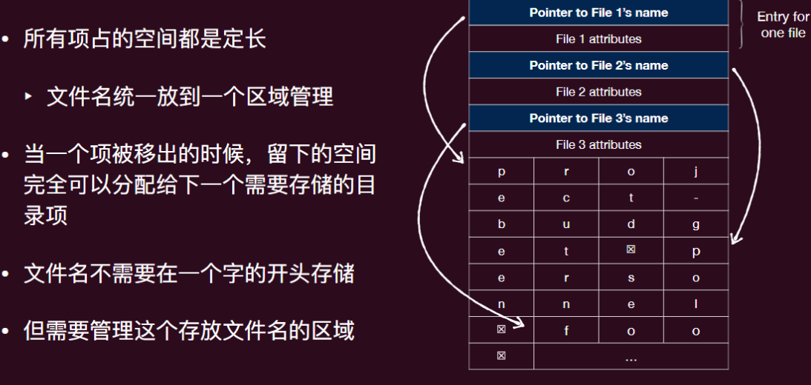

操作系统-14持久化-文件系统
磁盘中存储的数据
- 程序数据
- 可执行文件、动态链接库、应用数据
- 用户数据
- 文档、下载、截图
- 系统数据
- 配置文件
文件系统
存储和读取本身没有问题，磁盘驱动器就是做这个的
但让应⽤程序直接通过驱动访问存储设备 (1950s)？
- 程序出 bug 了（不可避免），完全可能弄坏整块磁盘
- 连带着所有数据，包括操作系统都直接损坏
因此应⽤程序应该“有限制”地访问数据
- 提供合理的 API 使多个应⽤程序能共享数据
- 提供⼀定的隔离，使恶意/出错程序的伤害不能任意扩⼤
- 这就是⽂件系统
⽂件系统是对持久性存储的抽象和接⼝。
- 类⽐
- 线程抽象：⼀个 CPU → 多个虚拟 CPU，在时间上共享
- 虚拟存储：⼀份内存 → 划分给多个虚拟地址空间
- ⽂件系统：⼀个物理磁盘 → 多个虚拟磁盘
文件系统
- 持久性和命名数据：⽂件和⽬录
- 存储在系统中直到显式删除为⽌
- 可以通过⽂件系统关联的可读标识符访问
- 访问和保护：提供打开、读取、写⼊和其他操作；调节不同⽤户对⽂件的访问。
- 磁盘管理：公平有效地利⽤磁盘空间
- 分配空间给⽂件，并跟踪空闲空间
- 快速访问⽂件
- 可靠性：不得丢失⽂件数据
文件
⽂件是操作系统创建的逻辑存储单元，⽤于存储信息
- 可以是数据库、⾳频、视频、⽹⻚等内容。
- 它是⼀组数据集合（类型由⽤户定义）
- 可以创建、读取、写⼊和删除
- 提供了⼀种在磁盘上存储信息并随后读取的抽象机制。
文件命名
⽂件的命名规则因系统⽽异
- ⻓度和特殊字符
- 字⺟⼤⼩写
⽂件扩展名：例如. txt，. c
- 表示⽂件内容的某些类型
- 为应⽤程序或操作系统提供⽂件合理操作的提示
文件类型
许多操作系统⽀持多种类型的⽂件
- 普通⽂件 (‘-’)：包含⽤户信息的⽂件
- ASCII ⽂件，⼆进制⽂件
- ⽬录 (‘d’)：⽤于维护⽂件系统结构的系统⽂件
- 符号链接⽂件（‘l’）
- 命名管道⽂件或简称管道⽂件（‘p’）
- 块⽂件（‘b’）
- 字符设备⽂件（‘c’）
- 套接字⽂件（‘s;）
文件元数据（属性）
除了⽂件的名称和数据外，操作系统还会保留⽂件的额外信息：
- 位置：⽂件在设备上的位置指针
- ⼤⼩：⽂件的⼤⼩（当前⼤⼩或最⼤⼤⼩）
- 时间：⽂件的创建时间、最近访问时间和最近修改时间
- 所有者：⽂件的当前所有者
- 保护信息
⽂件系统应该将⽂件元数据保存在⼀个结构中（⽂件控制块）：
- 存储在磁盘上，并且缓存在内存中以加快访问速度
文件控制块->unix 中就是 inode (index node)
文件访问
顺序访问：按顺序读取或写⼊数据
- 读取下⼀个/写⼊下⼀个
- 最常⻅的访问模式（例如，复制⽂件，编译器读取和写⼊⽂件）
- 速度快（可以达到磁盘的峰值传输速率）
随机（直接）访问：随机寻址任意块
- 读取 [n] 写⼊[n] 寻址[n]
- ⽂件操作包括块号作为参数
- 速度慢（寻址时间和旋转延迟）
文件描述符
⽂件描述符（句柄）：操作系统分配给⼀个进程打开的⽂件的⼀个唯⼀数字 （每个进程私有），⽤于引⽤该⽂件。
- 持有该⽂件描述符，可以对对应的⽂件执⾏特定操作
- 避免在每次访问时解析⽂件名（在⽬录中搜索⽂件名）和检查权限
- ⼀个⽂件可以以不同⽅式多次打开
文件偏移
对于进程打开的每个⽂件，操作系统都会跟踪⼀个⽂件偏移量，该偏移量决定下⼀次读取或写⼊将从何处开始。
- 隐式更新：当进⾏ N 字节的读取或写⼊时，N 会被添加到当前偏移量。
- 显式更新：使⽤ lseek () 函数。
打开文件表
当进程打开⼀个⽂件时，操作系统应该创建⼀些额外的数据结构（在内存中），⽤于存储关于进程打开⽂件的信息。
每个进程都维护⼀个打开⽂件表
- ⼀个由⽂件描述符索引的数组
- 表中的每个条⽬跟踪⽂件描述符所引⽤的底层⽂件，当前偏移量以及其他相关细节（例如⽂件⼤⼩、位置、权限等）
要打开⼀个⽂件，搜索系统范围的打开⽂件表，以查看⽂件当前是否正在使⽤
- 如果没有，搜索⽬录以查找⽂件名，并在系统范围的打开⽂件表中添加⼀个条⽬
在属于进程的打开⽂件表中创建⼀个打开⽂件的条⽬，并指向系统的打开⽂件表
增加系统的打开⽂件表中的打开计数
- 只有当所有进程关闭⽂件（或退出）时，才可以删除表条⽬
返回指向每个进程打开⽂件表中条⽬的指针（⽂件描述符）
文件描述符表 & 打开文件表 & inode 表
两个进程打开相同文件
- 两个进程可以指向同⼀个全局的打开项（如 Fork）
- ⼀个进程可以有多个指向同⼀个打开项的⽂件描述符（Dup）
目录
⽂件系统通常有⽬录来跟踪⽂件
- 通过将⽬录放在其他⽬录内，⽤户可以构建任意的⽬录树（或⽬录层次结构）
标识⽂件或⽬录的字符串称为路径 - 绝对路径：从根⽬录到⽂件的路径（使⽤ 某种分隔符）
- 相对路径：为每个进程提供⼀个当前（⼯ 作）⽬录
- 在 Unix 中，每个⽬录中有两个特殊条 ⽬：“.” 和 “…”分别代表当前⽬录和上⼀ 层⽬录
⽬录存储了⽂件名与低级别结构（⽂件控制块 inode）之间的映射
- 在 Unix 中，每个⽬录条⽬只是⼀个 ⟨⽂件名，inode 号⟩ 对
- ⽬录被存储为⼀个⽂件
- 要查找⼀个⽂件，需要找到包含该映射的⽬录
- 根⽬录是特别的：需要为根⽬录分配⼀个固定的 inode 号
目录的操作
共享文件
通过将⼀个新⽂件名链接到⼀个旧⽂件名，我们可以创建另⼀种引⽤同⼀⽂件的⽅式
- 可以为同⼀个⽂件创建多个不同的名称
- ⽬录结构变成⼀个有向⽆环图
- 有两种链接
- 硬链接（Hard link）
- 符号链接（Symbolic link）或软链接 (Soft link)
硬链接
硬链接本质上是 inode 号的别名
因此，当创建⼀个⽂件时，
- ⾸先，创建⼀个结构（inode），该结构将跟踪关于⽂件的所有相关信息
- 其次，将⼀个⼈类可读的名称链接到该⽂件，并将该链接放⼊⽬录中
但不能链接到另⼀个⽂件系统上的⽂件
- 因为 inode 号只在⼀个⽂件系统内是唯⼀的
不允许链接到⽬录（简化管理）
- 这防⽌了在⽬录层次结构中创建循环
- 避免了⽗⽬录的不明确性 - ⽐如如果多个⽗⽬录有指向同⼀⼦⽬录的链接，那么该⽬录中的 “…” 指向什么？
软链接
符号（软）链接：创建⼀种不同类型的⽂件（链接类型）
符号（软）链接是路径名的别名
- 可以链接到⽬录，或跨⽂件系统链接
当需要解析路径名时符号链接被解析
- 找到⽬标⽂件的名称，并使⽤新名称打开
- ⽬标可以是另⼀个符号链接（递归解析）
- ⽐硬链接效率低
当删除符号链接时，⽬标⽂件保持不变
- 当⽬标⽂件被删除时，产⽣引⽤悬空（ dangling reference）
- 该链接指向⼀个已不存在的路径名
文件保护
⽂件保护是为了防⽌意外和恶意破坏⾏为
⽂件所有者应该能够控制
- 可以做什么？
- 谁可以做？
访问权限的类型
- 对于⽂件：read / write / execute
- 对于⽬录：list / modify / delete
- 对于访问权限本身：更改访问权限 / 给予某⼈访问权限 / 撤销某⼈的访问权限
访问控制矩阵（Access Control Matrix）：系统访问控制的实现可以视为基于⼀个巨⼤表格，该表格编码了系统中每个⽤户或者⽤户组的所有访问权限
文件系统挂载 Mount
⼀个⽂件系统在能被访问之前，必须先进⾏挂载
- 从现有⽂件系统中的某个路径（挂载点）创建到挂载⽂件系统的根⽬录的映射
- 将多个文件系统统一到一棵树中
- 在 Linux 上，mkfs 命令可以在块设备上创建⼀个新的⽂件系统，mount 命令可以在当前⽂件系统中的某个⽬录下挂载⼀个⽂件系统。没有任何参数时，mount 命令会显示当前的挂载点.
两个关键的抽象
文件系统 & 虚拟内存
文件系统实现
我们需要回答如下⼏个问题：
- ⽂件和⽬录是怎么存储和组织的？
- 磁盘空间如何管理？
- ⽂件系统的实现是否⾼效和可靠？
文件系统的布局
⽂件系统需要为需要存储的数据维护⼀个其在磁盘上的数据结构
- 数据区域 (数据块): 磁盘保留的⼀个固定数据块部分⽤来存储数据本身
- inode 表：每个⽂件的元信息
- ⽂件对应哪些数据块、⽂件的⼤⼩，拥有者，时间戳，访问权限…
- ⼀个数据块可以存储多个元信息（inodes），⼀个 4KB 的数据块可以包含 16 个 256 字节的 inode
- ⼀个 inode 在哪个数据块存储是容易查询的
- 分配数据结构: 对于已分配和空闲的空间的信息 (空闲空间分配)
- 决定⼀个 inode 或⼀个数据块是否是空闲的
- 有两个空闲数据结构（基于 bitmap），⼀个为了 inode，⼀个为了数据块
- 超级块（Superblock）: ⽂件系统本身的信息
- ⽂件系统的类型、inodes 数量、数据块数量、inode 表开始的块地址…
- 当挂载⼀个⽂件系统时会读取超级块的信息
- 启动块：启动 OS 所需要的信息
- ⼀般来说是⼀个分区的第⼀个数据块 (没有 OS 的话为空)
⽂件系统还需要在内存中维护相应的数据结构⽤来⽅便的对磁盘数据进⾏访问 （⽤来反映和拓展磁盘中的结构）
- 挂载表（Mount table）: 关于⽂件系统的挂载信息（挂载点、⽂件系统类型）
- 打开⽂件表: 系统范围的和每个进程的
- ⽬录结构：最近访问的⽬录信息
- I/O 内存缓冲: 读写磁盘时需要处理主存和磁盘之间速度差异的“缓冲带
文件组织
文件需要磁盘给定相应的数据块进⾏存储，此外还需要有⼀些数据结构来反映该⽂件⽤的数据块在哪
很多种组织⽅式
- 连续存储（Contiguous）
- 链表（Linked List）
- ⽂件分配表（File Allocation Table）
- 索引式配置（Indexed Allocation）
连续分配
- 只有⽂件的第⼀个数据块的地址和需要的数据块总数需要记录
- 线性的访问是⾼效的
- 随机访问的数据地址也是容易计算的
但不够灵活
- 在⽂件创建时就需要知道⽂件的⼤⼩，之后如何增加和减少⽂件的⼤⼩也是麻烦
- 有外部碎⽚：需要进⾏收缩操作（compaction）来减少这种碎⽚
基于链表的分配
每个⽂件是⼀个数据块的链表
- 每个数据块包含指向下⼀个块的指针
文件分配表 File Allocation Table FAT
⼀个基于链表分配的变种，其将所有的指针放到同⼀个表格中
- 对于每个磁盘数据块都有⼀个 FAT 的项
- 每个 FAT 项包含⼀个指向下⼀个 FAT 项的指针，或者⽂件终⽌符号
- 对于随机访问的操作，只需要访问该 FAT 表即可，该表可以直接存储进主存从⽽减少需要 I/O 的次数
索引式分配 Indexed Allocation

多级索引
使⽤间接指针：可以将索引块中的指针指向⼀个由指针组成的数据块，其中每个指针再指向数据块
- ⼀个索引块中可以赋予固定数量的直接指针 （指向数据块）和固定数量的间接指针
- 此时索引的结构变成了⼀个树（⾮平衡）
- 对于⼩⽂件和⼤⽂件都能很好⽀持
- ⼀般有 2 级和 3 级的⾮间接指针
目录组织
⽬录提供了找到⽂件名和其在磁盘上的数据块的映射信息⟨ ⽂件名, ⽂件索引⟩
- 当需要打开⼀个⽂件时，OS ⾸先找到路径名，并根据路径名找到磁盘上的⽬录项
- ⽬录项提供了该⽂件对应的磁盘数据块，可以是
- 整个⽂件所在的磁盘地址
- 第⼀个数据块的编号
- ⽂件的元信息 inode 号
如果⽂件名的⻓度过于⻓？
- 给⽂件名的⻓度设置⼀个上限，使其最多含有 N 个字符
- 每个⽂件的⽂件名项都是⼀个固定⼤⼩的字符数组
- 简单，但是问题是，不是每个⽂件名都很⻓
- 对于那些⼤部分拥有短的名字的⽂件，会造成⼤量的浪费

给定⽬录实现下的⽂件查找：
- 如果⽬录存储的是 ⟨ file name, inode number ⟩ 的列表
- 从头到尾开始搜索列表中的项
- 如果⽬录中的项很少没问题（对于现实中的⼤部分情况都很好），但如果⼀个⽬录中出现⼤量的项， 这个做法就很低效了
- 解决⽅案：增加⼀个额外的 hash 表 (以 filename 为 key)
- 使⽤链表来处理碰撞
- 更快的查询，但也需要更为复杂的管理
- 此外，⽆论哪种⽅案，都可以利⽤ cache 来进⼀步加快搜索
空闲空间管理
如何管理空闲的 inode 块和数据块？
- 每当⽂件和⽬录需要被创建的时候需要找到空闲的空间存储这些数据
- 两种常⻅的管理结构：Bitmap（位图） 和空闲列表
- 也有采⽤更复杂结构如 B 树
Bitmap
空闲列表
块大小
磁盘的块到底多⼤合适？
- 过于⼤: 由于⼤部分都是⼩⽂件，磁盘会产⽣⼤量的浪费（内部碎⽚）
- 过于⼩: 读⽂件时会产⽣⼤量的寻道和延迟 (每个⽂件都会包含⼤量的块)
历史上⽂件系统基本都选择 1~4 KB 的块⼤⼩
- 当磁盘超过 1TB（现在已经很普遍），块⼤⼩设置为 64 KB 更为合适
- 磁盘空间如今已经很少会出现不⾜的状
读文件
假设⼀个⽂件系统被挂载，其中超级块在内存中, 但其他 (inodes, directories) 都在磁盘上
读⼀个⽂件⾸先需要打开这个⽂件：
- ⾸先需要循着路径名找到相应的 inode
- 读取这个 inode，做权限检验，合法就返回⽂件描述符（对应的操作会反映到打开⽂件表中）
然后对每个发起的读操作：
- 读相应的 inode
- 读相应的数据块
- 写 inode (更新上次访问时间)
- 更新内存中打开⽂件表中的 offset
写文件
⾸先打开⽂件（过程与读⽂件类似）
但与读⽂件不⼀样的地⽅在于，写⽂件可能需要分配⼀个新的数据块 (除⾮ 覆写旧数据块)
- 读和写空闲数据块结构⽐如 bitmap (找到⼀个空闲的数据块标记为占有)
- 读和写⽂件的 inode (更新 inode 表中这个新数据块的位置)
- 写这个新的数据块
当创建⼀个⽂件时需要更多的操作
- 读和写空闲数据块结构⽐如 bitmap (找到⼀个空闲的数据块标记为占有)
- 读和写⽂件的 inode (初始化)
- 读和写⽬录的数据 (将⽂件名和其对应 inode 项写⼊)
- 读和写⽬录的 inode (更新⽬录)
- 如果⽬录需要增加容量来添加这个新的项，需要更多的 I/O (访问空闲数据结构，增加新的⽬录的数据块)
文件系统性能
⼀个⽂件系统如何减少 I/O 带来的开销?
- 访问磁盘 (I/O 操作) ⽐访问主存慢得多
- Read-Modify-Write 过程
- ⼏乎所有的⽂件系统都将⽂件分割成固定⼤⼩的块
- 将磁盘块复制到主存以访问其内容，并只有发⽣修改才将其写回
缓存和缓冲（Caching and Buffering）
显然⽆法将磁盘的所有块都放进内存，应该只放⼊需要频繁访问的块（类似缓存机制），这样就可以读取该块就可以极⼤的减少 I/O 的操作了
- 利⽤哈希表来记录⼀个给定块是否在主存⾥
- 如果 cache 满了就需要移除⼀些块 (类似⻚⾯替换机制，⽐如 LRU)
现代系统将虚拟内存⻚和⽂件系统缓存⻚集成到统⼀的⻚缓存中
- 这样，内存可以在虚拟内存和⽂件系统之间更灵活地分配
预取: 可以将需要的数据块提前存⼊缓存中来提⾼缓存击中率
- 很多读⽂件操作是线性的，这时预取的效率很⾼
- 但如果是随机访问，预取则⽆效
- 因此可能会造成加载⽆⽤的数据块和替换需要⽤的数据块这样低效的操作
- ⽂件系统可以追踪每个打开⽂件的访问形式
读的 I/O 可以通过的充分的缓存来避免，但还是需要写磁盘的 I/O 来达成⽂件数据的持久性
- 写缓冲（Buffering）
- 可以延迟写操作：⽂件系统可以批处理⼀些 I/O 写的操作（避免多次频繁的少量的 I/O 的操作，⽐如可以合并 bitmap 的很多位运算）
- 缓冲写操作，⽂件系统还可以合理的调度 I/O 来提⾼性能（⽐如让相近的数据块⼀并写⼊）
- 有些写操作甚⾄可以完全避免 (创建了⼀个⽂件然后删除)
- 但更好的性能也会带来潜在的不⼀致性：⼀旦发⽣ crash, 没有提交到磁盘的写操作会丢失
- ⼀般每隔⼀段时间会写缓冲，时间间隔⼤⼩是⼀个 trade-off
快速文件系统 Fast File System FFS
在 FFS 中实现数据局部性（data locality）：将相关内容放在⼀起（将不相关内容分开）
对于⽂件：
- 将数据块分配到与其 inode 相同的组中
- 将同⼀⽬录中的所有⽂件放置在该⽬录所在的组中
对于⽬录：
- 找到已分配⽬录数量较少（以平衡各组间的⽬录）且空闲 inode 数量较多（以便能分配 ⼤量⽂件）的组。
- 将⽬录数据和 inode 放在该组中
文件系统可靠性
一致性
崩溃⼀致性问题（Crash-consistency problem）：崩溃故障可以在任何时刻发⽣（例如，电源故障），⽂件系统可能会受到这种崩溃的影响
- 对⽂件系统的更新操作需要多次 I/O 操作（更新多个数据结构）
- 崩溃时，某些操作可能完成，⽽某些操作可能丢失
- 这会导致⽂件系统处于不⼀致的状态
当需要为⼀个⽂件增加⼀个数据时
- 需要写⼀个新的数据块
- 需要写这个⽂件的 inode
- 需要写数据的 bitmap
理想的方案：
- ⼀个⽂件系统原⼦的从⼀个⼀致的状态进⼊另⼀个⼀致的状态
- 但磁盘只能⽀持⼀个写操作是原⼦的（⽽两个状态之间的迁移往往涉及多个写操作）
实际的⽅案
- 进⾏⽂件⼀致性检查（File System Consistency Check, fsck）
- ⽇志化
进行文件一致性检查
让不⼀致发⽣，并在事后修复（在重启期间）
fsck：在挂载⽂件系统之前运⾏（fsck 运⾏期间需要没有相关的⽂件系统活动），确保⽂件系统元数据在内部⼀致
完整性检查超级块
- ⽂件系统⼤⼩是否⼤于已分配的总块数？
- 发现不⼀致时，使⽤超级块的另⼀份副本
检查空闲块和位图的有效性
- 扫描 inode 以确定哪些块已分配
- ⽣成数据位图的正确版本
- 发现不⼀致时，覆盖位图（信任 inode）
- 进行类似的检查以更新 inode 位图
检查 inode 是否未损坏
- 例如，每个 inode 应该有⼀个有效的类型字段（普通⽂件、⽬录、符号链接等）
- 如果问题⽆法修复，清除 inode 并更新 inode 位图
检查 inode 链接
- 扫描整个⽬录树，计算每个⽂件和⽬录的硬链接数
- 发现不⼀致时，修正 inode 中的链接计数
- 如果没有⽬录引⽤已分配的 inode，将其移动到名为 lost+found 的⽬录中
检查重复的指针和损坏的块
- 两个 inode 如果指向同⼀个数据块
- 清除⼀个 inode (如果其明显损坏), 或者复制那个数据块 (使的每个 inode 指向不同的数据块（内容拷⻉）)
- 如果⼀个 inode 指向分区外的数据块
- 直接移除这个 inode
检查⽬录
- 检查 . 和 … 是否是第⼀和第⼆个项
- 检查其中的每个 inode 所指向的地⽅是否已经被分配
日志
基本思路：预写⽇志（Write-ahead logging）或⽇志（Journaling），该思路借鉴⾃数据库系统
- 在覆盖结构之前，先写⼀个⼩⽇志（存储在磁盘上），描述将要做的事情
- 如果在更新过程中发⽣故障，我们可以在重启时读取⽇志并重试
- 在写⼊意图之前崩溃：没有操作
- 在写⼊意图之后崩溃：重做该操作
- 在更新期间增加的⼀些⼯作量，可以⼤⼤减少恢复期间所需的⼯作量
- ⽆需扫描整个磁盘，只需要查看奔溃前的⽇志中的记录即可
- 被许多⽂件系统使⽤，包括 Linux 的 ext3、ext4 和 Windows 的 NTFS
⽂件的更新被作为 事务（transaction）保存在⽇志中（⽇志写⼊）
⼀旦事务安全地写⼊磁盘，将更新内容（元数据和数据）写⼊其最终的磁盘位置（checkpoint，检查点）
- 将 I[v2]、B[v2] 和 Db 写⼊它们的磁盘位置
问题：
解决方案：
当需要从崩溃中恢复时，⽂件系统会扫描⽇志并查找已提交到磁盘的事务：
如果在⽇志提交之前发⽣崩溃
- 则忽略待处理的更新
如果在⽇志提交之后但在检查点之前发⽣崩溃
- 则按顺序重放已提交的事务（重做⽇志）
- 可能会有些写冗余（因为有些⽇志可能已经正确写⼊，会被重新再写⼀ 次），但问题不⼤，因为崩溃发⽣不频繁
⽇志在提交之后其实就不需要保留了
有限⽇志：将⽇志视为循环数据结构（bounded buffer），反复重⽤（circular log）
- ⼀旦事务被检查点记录，释放它在⽇志中占⽤的空间
- ⽤⼀个⽇志超级块记录哪些事务尚未被检查点记录
日志结构文件系统
当数据发⽣变化时，不必回去编辑原始数据，只需将新副本存储在末尾（类似磁带）。
- 在最简单的情况下，假设容量⽆限
日志⽂件系统（LFS） 仍然有 inode 和数据块，只是将它们放置⽅式不同。
总是写到末尾：例如，当写⼊⼀个⼩⽂件时
⼀如既往，我们先写⼊数据块，然后再写⼊ inode，以最⼩化中断/崩溃的影响。
指向新的版本
- 旧数据仍然存在于磁盘上，但内存中的 i-map 和其磁盘上的持久副本不再引⽤它
- 如果磁盘空间是⽆限的，那就⾜够了
- 此外，如果我们保存旧版本的检查点区域，它还可以⽤来查看⽂件系统的旧快照
- 能够保留旧快照的⽂件系统被称为版本化⽂件系统（a versioning file system）
磁盘容量是有上限的
- 受限于磁盘容量，不可能永远顺序写⼊， 不能⽆限期地保留旧版本的数据。
- 最终需要对具有可⽤空间的段进⾏垃圾回收。
- 实际上，最好是释放整个段（如果都是垃圾）
- 但如果遇到部分填充的段，那么可以先释放完整的段，并在⽇志末尾重新写⼊ ⼀个压缩版本的段（只写⼊垃圾收集器留下的“空洞”）
- 垃圾收集器定期扫描磁盘，可能在空闲时进⾏
- 但是垃圾收集器如何决定哪些块是活动的，哪些是⽆⽤的呢
总结
两个关键抽象：⽂件和⽬录
- 元数据信息：inode
- ⽂件描述符 File Descriptor, 打开⽂件表
- 软/硬链接
⽂件实现：
- 布局（超级块、空闲位图、inode 块、数据块）
- 性能（FFS、缓存和缓冲）、⼀致性检查、⽇志
- ⽇志结构⽂件系统